В этом разделе
Интерфейс административного раздела системы "1C-Битрикс: Управление сайтом" разграничен на логические области, обеспечивающие доступ к различным функциональным возможностям системы. Интерфейс системы построен по иерархическому принципу: вышестоящие области интерфейса переключают зависимые области в тот или иной режим работы. Это позволяет скрыть функциональные возможности системы, в которых нет потребности в данный момент, и вынести на первый план требуемые функции.
Интерфейс содержит следующие области.
Административная панель
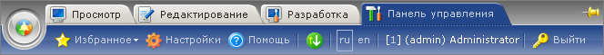
Административная панель управления содержит общие команды, которые могут понадобиться при управлении сайтом.
| Команда | Описание |
|---|---|
| Служит для быстрого доступа к странице административного раздела. | |
| Открывает публичный раздел сайта (т.е. раздел, доступный посетителям). Удерживая клавишу Shift, можно открыть публичный раздел в новом окне браузера. | |
| Открывает раздел редактирования основных элементов сайта (страниц, разделов, меню). Удерживая клавишу Shift, можно открыть раздел в новом окне браузера. | |
| 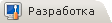 | Открывает раздел с полным набором действий по редактированию сайта (страниц, разделов, меню, компонентов, включаемых областей). Удерживая клавишу Shift, можно раздел в новом окне браузера. |
| Открывает административный раздел для управления всеми возможностями сайта. | |
| Добавляет текущую страницу в список Избранного. Страница добавляется со всеми активными в данный момент настройками фильтра. | |
| Открывает форму настроек активного модуля. Например, если открыт раздел Управление структурой, эта кнопка открывает форму настроек модуля Управление структурой. | |
| Открывает (в отдельном окне) раздел справочной системы по текущей форме. | |
| Открывает форму получения обновлений системы. | |
| 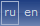 | Позволяет переключиться на другой (установленный в системе) язык административного интерфейса. |
| Завершает авторизованный сеанс в Административном разделе. |
Административное меню
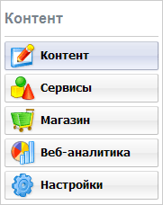
С помощью этой панели можно выбрать обособленный набор функций, относящийся к определённой функциональной части системы. В зависимости от того, установлены ли те или иные модули, набор функций может различаться.
Набор функций Контент содержит инструменты для управления информационными блоками, структурой сайта (т.е. папками и файлами), а также настройки документооборота и управления документами.
Набор функций Сервисы наиболее зависим от наличия в системе тех или иных модулей. Полный набор функций позволяет управлять опросами, веб-формами, рекламой, рассылками, техподдержкой, форумами и почтовой системой.
Раздел Веб-аналитика полностью посвящён функциям сбора, обработки и отображения статистики по сайтам. Этот раздел присутствует, только если установлен модуль Статистика.
Набор функций Настройки позволяет управлять пользователями, валютами интернет-магазина, шаблонами, получать обновления системы, а также настраивать прочие параметры сайта и системы.
Меню функций
Содержимое этой панели зависит от того, какой набор функций выбран в Административном меню. Например, выбрав набор Контент, мы можем получить такой вид панели:
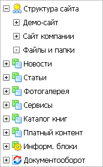
Обратите внимание на то, что такое дерево-меню строится системой динамически с использованием технологии AJAX. Код, ответственный за построение меню, опрашивает все установленные в системе модули, которые, в свою очередь, возвращают данные, необходимые для добавления пунктов меню. Поэтому, при открытии страницы Административного раздела или развёртывании узла меню в первый раз (например, списка информационных блоков), меню может появиться с некоторой задержкой, о чем будет выведено соответствующее предупреждение.
Выбирая пункты дерева-меню, можно получить доступ непосредственно к тем функциям, которым они соответствуют. При этом, рабочая область (4) будет отображать интерфейс для работы именно с этими функциями.
Рабочая область
Это основная область, в которой происходит большинство операций по управлению сайтом: просмотр элементов, составляющих контент сайта (например, информационных блоков, баннеров и т.п.); добавление контента; создание и удаление папок и файлов; настройка меню и т.д. Такие операции реализуются формами двух основных видов:
- Формы отчетов. Формы отчетов предназначены для просмотра элементов в форме таблиц, а также, в отдельных случаях (напр., формы статистики) - в форме графиков и диаграмм;
- Формы редактирования. Такие формы применяются для добавления и правки элементов контента, а также для задания настроек модулей и системы в целом.
Формы, отображаемые в рабочей области, имеют общие элементы. Ознакомьтесь с их функциями - это значительно облегчит дальнейшую работу с сайтом.
Ссылка на текущую страницу
Эта пиктограмма (, вверху справа) содержит ссылку на текущую страницу (с учётом переходов по AJAX). Скопировать ссылку в буфер обмена можно, нажав на пиктограмме правой кнопкой мыши и выбрав команду Копировать ярлык. Ссылка на страницу может понадобиться вам, например, при обращении с службу технической поддержки компании "1C-Битрикс".
Контекстная панель
Контекстные панели могут отображаться как на формах отчетов, так и на формах редактирования. Если отображаемая форма позволяет производить какие-либо действия в отношении отображаемых элементов, ниже фильтра на форме может располагаться контекстная панель, содержащая такие команды. Например, форма отчета Каталог: Информационные блоки имеет такую контекстную панель:
Первая кнопка панели этой формы позволяет добавить новый информационный блок.
Обратите внимание на то, что большинство контекстных панелей содержит кнопки Excel и Настроить. Кнопка Excel экспортирует список в формат Microsoft Excel. Кнопка Настроить выводит диалоговое окно, в котором пользователь может выбрать колонки, которые требуется отобразить в таблице отчёта данной формы, а также задать некоторые параметры, применяемые по умолчанию (поле и направление сортировки и т.п.). Настройки каждой отдельной формы сохраняются для текущего авторизованного пользователя.
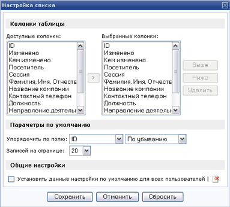
Для применения выбранных настроек нажмите кнопку Сохранить. Для применения настроек по умолчанию нажмите Сбросить.
Формы отчётов
Формы отчётов обычно выводятся при выборе какого-либо пункта в дереве-меню области доступа к функциям, содержанию и структуре. Формы отчётов показывают подробную (обычно - наиболее важную) информацию об отображаемых элементах. Например, выбрав пункт Баннеры в разделе Реклама, пользователь получает полный отчет об имеющихся в системе баннерах:
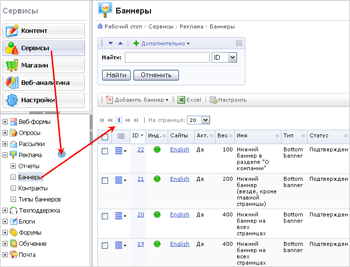Формы отчетов имеют следующие общие элементы.
Фильтр
Фильтр - своего рода средство поиска данных, предназначенное для отбора информации, отображаемой в таблицах форм. Введя критерии поиска (отбора) в фильтр, можно найти и показать не все, а только требуемые данные (обычно, записи базы данных).
Типичный фильтр системы выглядит так:
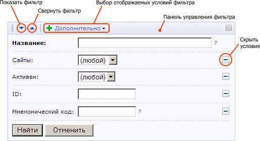Кнопка Показать фильтр отображает фильтр и все критерии поиска. Нажатие кнопки Свернуть фильтр скрывает его, оставляя видимой лишь панель управления фильтра. Нажав кнопку Дополнительно, можно выбрать, какие поля фильтра следует показать, а какие - скрыть.
Если справа от поля фильтра находится знак вопроса (?), такое поле позволяет использовать сложные условия поиска.
Таблица элементов
Таблица - основное средство группировки и отображения информации в системе. Несмотря на разнообразие, многие таблицы имеют схожие поля.
Колонка флажков
Колонка флажков позволяет выбрать один или более элементов для выполнения над ними каких-либо действий. Установка флажка в заголовке таблицы приводит к выбору всех элементов таблицы.
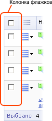Действия над отмеченными элементами производятся путём выбора требуемой команды в панели действий, расположенной ниже таблицы:
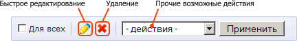
Обратите особое внимание на команду Быстрое редактирование. С ее помощью можно изменить наиболее важные и часто используемые свойства одновременно для всех отмеченных элементов, отображаемых в таблиц. Это даёт возможность правки свойств элементов, не покидая текущей формы отчёта (то есть, без переключения в форму редактирования).
Например, находясь в форме Каталог: Информационные блоки, можно отметить для быстрой правки инфоблоки Книги и Авторы:
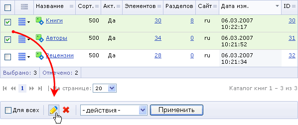
После нажатия на кнопку Быстрое редактирование, отображаемые в отчете и доступные для изменения значения станут отображаться как поля ввода:
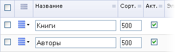
Отредактировав параметры элементов, нажмите кнопку Сохранить для внесения изменений.
Меню действий
Колонка Меню действий( ) содержит кнопки  , нажатие на которые приводит к появлению контекстного меню, в котором можно выбрать желаемое действие, допустимое над элементом таблицы. Например, элементы таблицы формы Каталог: Информационные блоки предполагают такие действия:
, нажатие на которые приводит к появлению контекстного меню, в котором можно выбрать желаемое действие, допустимое над элементом таблицы. Например, элементы таблицы формы Каталог: Информационные блоки предполагают такие действия:
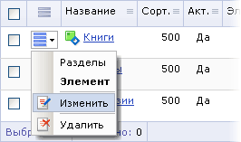
Формы редактирования
Этот тип форм применяется для изменения элементов контента сайта или для настройки системных параметров. Например, выбрав пункт Изменить меню действий информационного блока, можно открыть форму детальной правки этого инфоблока.
Элементы контента (или формы настроек системных модулей) могут иметь большое число изменяемых свойств. Поэтому многие формы редактирования отображаются как Страницы свойств. Страницы свойств реализованы в виде вкладок. Их применение позволяет разбить многочисленные свойства элемента на логические группы и сделать интерфейс более лёгким и понятным. Обычно свойства сгруппированы так, что на первых страницах свойств (в порядке слева направо) помещаются наиболее часто используемые, а на последних - дополнительные параметры.
Следующий рисунок показывает часть формы со страницами свойств информационного блока.
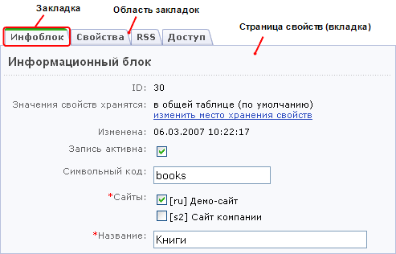
Некоторым пользователям (в особенности, привыкшим к интерфейсу предыдущих версий системы) бывает удобнее просматривать все поля формы в одной вкладке. Для показа всех полей в одном окне (или возврата в табулярный режим) нажмите кнопку в правой части области закладок:
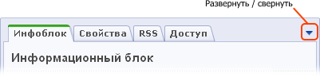
Управление общесистемными настройками интерфейса. Поведение мыши
Пользовательский интерфейс системы "1C-Битрикс: Управление сайтом" позволяет легко настраивать и запоминать их для каждого зарегистрированного пользователя. Для этого откройте форму Настройка интерфейса пользователя (Настройки > Настройки продукта > Интерфейс):
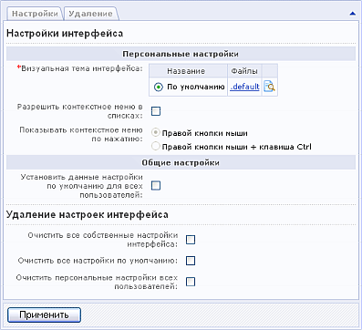
Вкладка Настройки позволяет:
- сменить тему, используемую для отображения всего интерфейса административной части;
- изменить поведение правой кнопки мыши при нажатии в таблицах отчётов.
По умолчанию, нажатие правой кнопки мыши в таблице отчёта выводит такое же меню, что и при нажатии кнопки меню действий (см. выше). Такому поведению соответствует активная опция Разрешить контекстное меню в списках. Также вы можете указать системе, что меню действий следует отображать, только если в момент нажатия кнопки мыши также нажата клавиша Ctrl клавиатуры.
Если эта настройка отключена, нажатие правой кнопки в таблицах всегда отображает стандартное контекстное меню браузера.
Раздел Общие настройки позволяет администратору назначить указанные параметры всем зарегистрированным пользователям. Раздел Удаление настроек позволяет сбросить собственные настройки, а также настройки других пользователей системы.
Поведение мыши по умолчанию
По умолчанию, пользовательский интерфейс системы реализует следующие операции в ответ на действия, совершаемые при помощи мыши.
- левый клик на кнопке меню действий; правый клик на строке таблицы отчёта - вывод меню действий;
- Ctrl + правая кнопка - выводит стандартное меню браузера;
- двойной клик на строке таблицы отчёта - открывает форму редактирования;
- Shift + двойной клик на строке таблицы отчёта - открывает форма редактирования в новом окне.
| © «Битрикс», 2001-2008, «1C-Битрикс», 2008 | 1С-Битрикс: Управление сайтом |